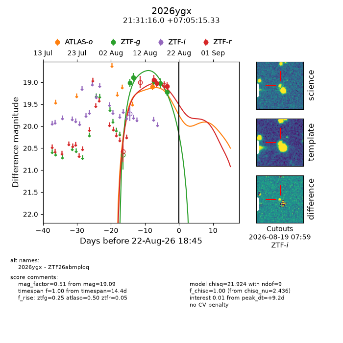
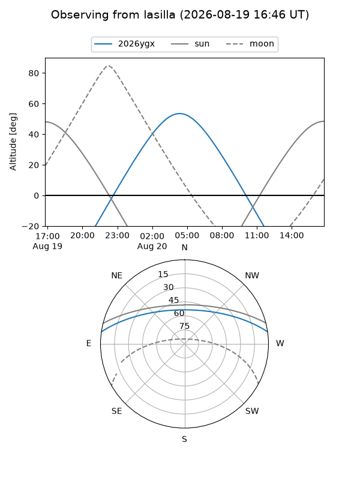
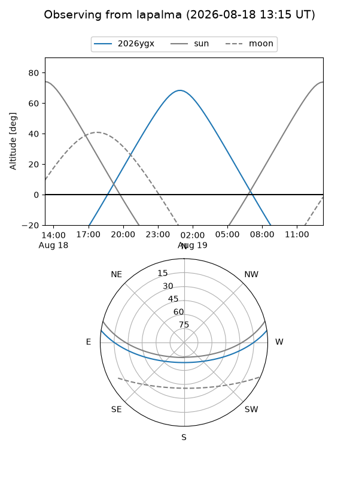
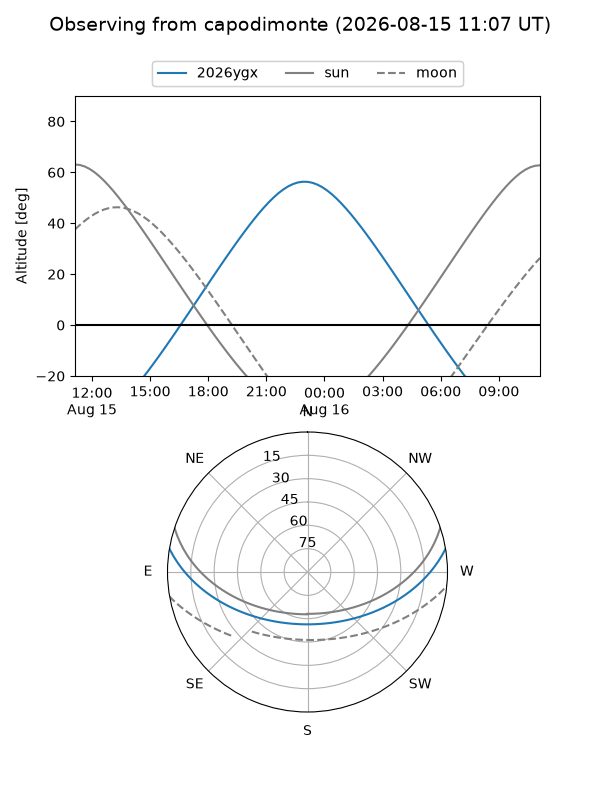
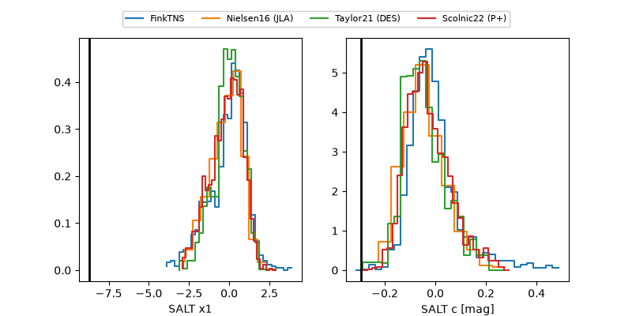

2026ygx
Target 2026ygx at 2026-08-22 18:48
Aliases and brokers:
FINK-ZTF: ztf.fink-portal.org/ZTF26abmploq
Lasair-ZTF: lasair-ztf.lsst.ac.uk/objects/ZTF26abmploq
ALeRCE-ZTF: alerce.online/object/ZTF26abmploq
YSE-PZ: ziggy.ucolick.org/yse/transient_detail/2026ygx
TNS name: wis-tns.org/object/2026ygx
Direct TNS query: direct search
alt names
ZTF26abmploq (ztf,fink_ztf)
2026ygx (tns,yse)
Coordinates:
equatorial (ra, dec) = 322.8167,+7.08759
equatorial (HMS+DMS) = 21:31:16.00,+07:05:15.33
galactic (l, b) = (60.6942,-30.72606)
Flags:
TNS type: nan
peak dt: +9.2
Photometry:
last atlaso=19.10, ztfg=19.22, ztfr=19.09
1 atlaso, 5 ztfg, 3 ztfr detections
Lightcurve

Visibility



Additional plots
